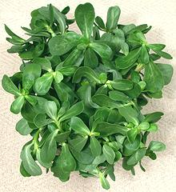
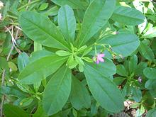
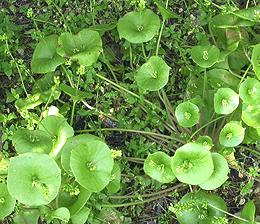
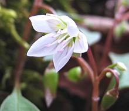

Magnolias

SAFARI
Users
Varieties
Common Purslane
 [Verdolaga (Mexico), Pigweed, Little Hogweed, Pusley; Sanhti, Punarva, Kulfa (India); Ma Chi Xian (China); family Portulacaceae, P. Portulaca oleracea]
This low growing succulent is native from North Africa through the
Indian Subcontinent and on to Australasia. It is a common invasive weed
in North America, particularly California vineyards, but there is some
evidence it was brought to Canada in pre-Columbian times. By the 20th
century it had fallen from favor north of the Mexican border, but due to
shifting demographics is now common in many specialty markets in Southern
California and elsewhere. Stems, leaves and flower buds are edible and
often used fresh in salads.
Details and Cooking.
Water Leaf
 [Ceylon Spinach (not unique); Cariru, Surinam Purslane, Philippine Spinach, Florida Spinach, Potherb Fameflower, Lagos bologi; Sweetheart; Gbure (Yoruba); Nela basale (Kannada); Talinum fruticosum syn Talinum triangulare of family Talinaceae]
Probably originating in the tropical Americas, this plant is grown as
a crop in West Africa, South and Southeast Asia and in subtropical parts
of North and South America. It is an important leaf vegetables in Nigeria
and is also grown along the Amazon River in Brazil. Having a fairly high
oxalic acid content it is similar in usage to spinach. As with other
purslanes, the leaves are somewhat fleshy and mucilaginous.
Details and Cooking.
Photo by Manojk distributed under license
Creative Commons
Attribution-ShareAlike v3.0 unported.
Miner's Lettuce
 [M. Claytonia perfoliata]
Native to the western coastal and mountain regions of North America, from the southern tip of Alaska south as far as Central America, this plant is most common in California, particularly the Sacramento and San Joaquin valleys. It appears in the spring, preferring cool moist ground, and starts to dry out in the early summer. It is easily recognizable by the completely round leaves with flower spikes extending from the center, but its regular leaves are spade shaped or very elongated ovals.
This herb was much used by gold rush miners who ate it to ward off
scurvy (man cannot live by salt pork and sourdough bread alone). Today
it is used raw in salads and sometimes cooked as spinach would be. It
has a somewhat spinach-like taste.
Details and Cooking.
Photo by Curtis Clark distributed under license
Creative Commons
Attribution-Share Alike 2.5 Generic.
Spring Beauty
 [Eskimo Potato; Oatkuk (Inuit); Carolina Spring Beauty; M. Claytonia tuberosa syn Claytonia caroliniana var tuberosum]
Native to eastern North America, there are several variations of
this plant, ranging from the Carolinas well into the Inuit regions of
Canada, where the tubers of C. Ttuberosa were important food to the
native people. The flowers and leaves are also edible.
Photo by Cathie Bird distributed under license Creative
Commons
Attribution-Share Alike 2.0 Generic.
Parakeelya
 [M. Calandrinia balonensis]
[M. Calandrinia balonensis]
A succulent herb native to central Australia. It has fleshy leaves about
1-1/2 to 4 inches long and brilliant purplish flowers 1 to 1-1/2 inches
across at the top of long wire-like stems. The Australian Aborigines
eat the leaves both raw and steamed, and the tuberous roots steamed. The
seeds are also eaten, ground into a paste.
Photo by Mark Marathon distributed under license
Creative Commons
Attribution-ShareAlike v4.0 International.